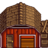
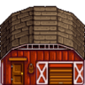
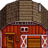
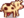
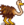

Barn
| Barn | Big Barn | Deluxe Barn | |
 |
 |
 | |
| Information | |||
| Upgrades From | N/A | Barn | Big Barn |
| Building Cost | |||
| Building Materials | |||
| Capacity | 4 | 8 | 12 |
| Animals |  Cow Ostrich |
Cow |
Cow |
| Footprint | 7x4
|
7x4
|
7x4
|
| Features |
|
|
|
The Barn is a type of farm building purchasable and upgradeable from Robin at the Carpenter's Shop.
Construction
The Barn takes three days to initially construct. During this time, Robin is unreachable for dialogue or gifting.
Upgrading the Barn requires two days. During this time, the barn can be used as normal. Robin can be found inside the Barn for purposes such as dialogue or gifting.
The total cost of a Deluxe Barn, built from scratch, is  43,000g
43,000g  Wood (1350)
Wood (1350)  Stone (650); or, if all wood and stone are bought from Robin during year 1,
Stone (650); or, if all wood and stone are bought from Robin during year 1,  69,500g, and
69,500g, and  175,500g if bought in year 2+.
175,500g if bought in year 2+.
Features
The barn houses cows, goats, sheep, pigs, and ostriches. Once you have unlocked an animal by building the barn needed to house it, that animal can be placed in any other non-upgraded barns you have built as well.
Barn Animals may be stuck outside at night if the barn doors are closed. The conditions for this are not clear (see Animals trapped outside). If an animal is stuck outside the barn at night, the next day their mood will be "grumpy." Animals stuck outside are also subject to Wild Animal Attacks.
The Barn can also be used in a manner similar to the Shed for storing Chests, Artisan Equipment, Furniture, etc.. The animals are undisturbed by the clutter, even if their paths are blocked.

Bugs
It is possible to have 13 animals in a barn at once, if the player has a barn filled with 11 animals and an existing animal gives birth the same night as an Ostrich Egg hatches.
Interior
Barn Interior
Big Barn Interior
Deluxe Barn Interior
| Buildings | ||
|---|---|---|
| Merchants | Abandoned House • Adventurer's Guild • Blacksmith • Bookseller • Carpenter's Shop • Casino • Desert Trader • Fish Shop • Giant Stump • Harvey's Clinic • Ice Cream Stand • Island Trader • JojaMart • Marnie's Ranch • Oasis • Pierre's General Store • Qi's Walnut Room • The Stardrop Saloon • Traveling Cart • Volcano Dwarf • Wizard's Tower | |
| Houses | 1 River Road • 2 River Road • 1 Willow Lane • 2 Willow Lane • 24 Mountain Road • Elliott's Cabin • Farmhouse • Island Farmhouse • Leah's Cottage • Mayor's Manor • Tent • Trailer • Treehouse | |
| Farm Buildings | Farming | Barn • Cabin • Coop • Fish Pond • Greenhouse • Mill • Pet Bowl • Shed • Silo • Slime Hutch • Stable • Well |
| Special | Desert Obelisk • Earth Obelisk • Farm Obelisk • Gold Clock • Island Obelisk • Junimo Hut • Water Obelisk | |
| Other Buildings | Community Center • Dog Pen • Island Field Office • Joja Warehouse • Movie Theater • Museum • Spa • Witch's Hut | |